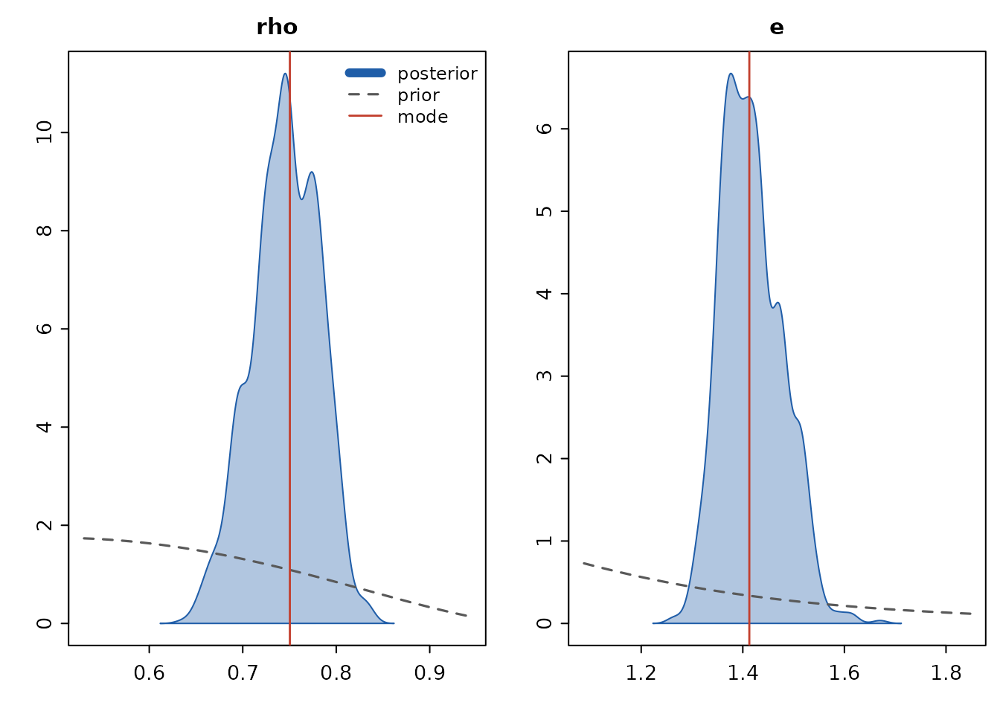
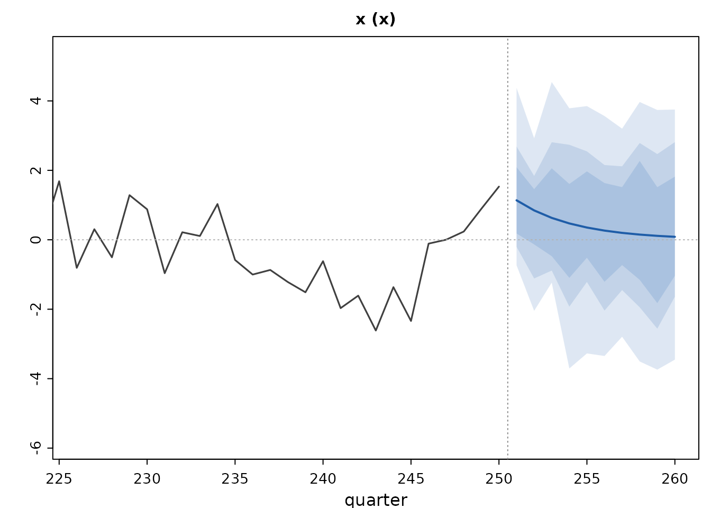

Estimating qpmR models: priors, posteriors, identification
Source:vignettes/qpmR-estimation.Rmd
qpmR-estimation.RmdqpmR estimates any subset of structural parameters and shock standard deviations by Bayesian methods (or maximum likelihood) over the Kalman-filter likelihood of the solved model. Everything without a prior stays calibrated – the operational reality of semi-structural models, where a handful of transmission parameters are estimated and the rest are judgmental.
Priors
priors() provides a small language in the mean/sd
parametrization economists write down. The distribution constructors
exist only inside priors(), so base R’s beta()
and gamma() functions are never masked:
library(qpmR)
#>
#> Attaching package: 'qpmR'
#> The following object is masked from 'package:stats':
#>
#> var
pr <- priors(
rho = beta(0.5, 0.2),
e = invgamma(1, 0.5) # a shock name means that shock's sd
)
pr
#> <qpm_priors> 2 priors
#> rho beta(mean 0.5, sd 0.2) on (0, 1)
#> e invgamma(mean 1, sd 0.5) on (0, Inf)truncate(normal(1.5, 0.25), lower = 1) restricts support
(and renormalizes, so marginal likelihoods remain valid).
A laboratory: estimating an AR(1)
Simulate data from a known truth, then ask the posterior to find it:
m0 <- qpm_model(variables = vars(x = "x"), shocks = shocks(e),
equations = eqs(x ~ rho * x[-1] + e),
params = list(rho = 0.5))
m_true <- qpm_calibrate(m0, rho = 0.8, sigma = c(e = 1.5))
obs <- simulate(qpm_solve(m_true), nsim = 250, seed = 4)
est <- qpm_estimate(m0, obs, pr, iter = 800, chains = 2, seed = 5,
verbose = FALSE)
est
#> <qpm_estimate> Bayesian (adaptive RWM) - 2 parameters, 2 chains x 800 draws (burn 400, acceptance 0.28)
#> log-posterior at mode: -444.29
#> param prior mode mean 5% 95% R-hat ESS learned
#> rho beta(0.5, 0.2) 0.750 0.745 0.688 0.800 1.02 102 yes
#> e invgamma(1, 0.5) 1.413 1.418 1.334 1.518 1.02 108 yes
#> 'learned' compares posterior to prior sd (yes < 0.5 < some < 0.9 < little)The sampler finds the posterior mode first (in transformed,
unconstrained space), seeds an adaptive random-walk Metropolis with the
inverse Hessian, and reports split R-hat and effective sample sizes. The
learned column compares posterior to prior spread – a cheap
identification signal. Draws that violate Blanchard-Kahn get zero
weight, which is the usual truncation of the prior to the determinacy
region.
plot(est)
Point estimates feed straight back into the workflow:
m_hat <- apply_estimate(est, "mean")
round(coef(est, "mean"), 3)
#> rho e
#> 0.745 1.418And posterior_forecast() produces fans that integrate
over the posterior – each draw re-solves the model and re-filters the
data, so the bands combine shock and parameter uncertainty:
fc <- posterior_forecast(est, horizon = 10, ndraws = 80)
plot(fc, vars = "x")
Identification: ask before you sample
qpm_identify() checks, before any MCMC, whether the
chosen parameters can be told apart – numerically differentiating the
solved model and its population moments in the spirit of Iskrev (2010).
A model in which two parameters enter only as a product is the classic
failure:
m_bad <- qpm_model(variables = vars(x = "x"), shocks = shocks(e),
equations = eqs(x ~ a * b * x[-1] + e),
params = list(a = 0.6, b = 0.9))
qpm_identify(m_bad, params = c("a", "b"))
#> <qpm_identification> 2 parameters, observables: x
#> x solution level: rank 1 < 2 - parameters not separately identified
#> combinations involved: a, b
#> ! solution level: near-collinear pairs (only jointly identified): a ~ b (1.000)
#> x moment level (means + autocovariances to lag 3): rank 1 < 2 - parameters not separately identified
#> combinations involved: a, b
#> ! moment level (means + autocovariances to lag 3): near-collinear pairs (only jointly identified): a ~ b (1.000)On the template, the core transmission parameters pass at full rank:
qpm_identify(qpm_template("bkl"),
params = c("b1", "b2", "b3", "c1", "c2", "a1", "a3"),
observables = c("pi", "i", "q", "y_gap", "dy_obs"))
#> <qpm_identification> 7 parameters, observables: pi, i, q, y_gap, dy_obs
#> v solution level: full rank (7), smallest/largest singular value 0.045
#> v moment level (means + autocovariances to lag 3): full rank (7), smallest/largest singular value 0.023Marginal likelihood and Bayes factors
marginal_likelihood() reports the modified harmonic mean
(Geweke 1999) across truncation probabilities, with a Laplace
approximation as a cross-check. Differences across models on the same
data are log Bayes factors:
ml_ar1 <- marginal_likelihood(est)
ml_ar1
#> <qpm_logml> log marginal likelihood: -448.42
#> modified harmonic mean over 800 draws, 2 parameters
#> by truncation: -447.85, -448.56, -448.63, -448.55, -448.51 (spread 0.77)
#> Laplace approximation: -448.46
#> differences across models on the same data are log Bayes factors
# a deliberately misspecified rival: white noise (rho fixed at 0)
est_wn <- qpm_estimate(qpm_calibrate(m0, rho = 0), obs,
priors(e = invgamma(1, 0.5)),
iter = 800, chains = 2, seed = 6, verbose = FALSE)
ml_wn <- marginal_likelihood(est_wn)
cat(sprintf("log Bayes factor, AR(1) vs white noise: %.1f\n",
ml_ar1$logml - ml_wn$logml))
#> log Bayes factor, AR(1) vs white noise: 106.4On real data
The same call estimates the Czech model shipped with the package. It takes minutes rather than seconds (each draw solves the model and filters 27 years of data), so it is not run here:
mcz <- qpm_calibrate(qpm_template("bkl", trends = "rw"),
pi_tar = 2, istar_ss = 2, pistar_ss = 2,
prem_ss = 1, a5 = 0.4)
cz <- czechia[czechia$period >= "1999",
c("period", "pi4", "i", "q", "dy_obs", "istar", "pistar")]
est_cz <- qpm_estimate(mcz, cz, priors(
b1 = beta(0.70, 0.10), b2 = gamma(0.25, 0.10), b3 = gamma(0.10, 0.05),
c1 = beta(0.70, 0.10), c2 = truncate(normal(1.5, 0.25), lower = 1),
eps_pi = invgamma(1.0, 0.5)
), iter = 3000, chains = 2, seed = 42)Results from that run (2 chains x 3000 draws, acceptance 0.30):
param prior mode mean 5% 95% R-hat ESS learned
b1 beta(0.7, 0.1) 0.378 0.380 0.342 0.417 1.01 226 yes
b2 gamma(0.25, 0.1) 0.050 0.058 0.033 0.089 1.01 101 yes
b3 gamma(0.1, 0.05) 0.003 0.005 0.002 0.010 1.01 100 yes
c1 beta(0.7, 0.1) 0.865 0.861 0.839 0.881 1.02 108 yes
c2 trunc-normal(1.5,.25) 1.352 1.282 1.017 1.726 1.26 17 little
eps_pi invgamma(1, 0.5) 2.629 2.706 2.414 3.033 1.00 99 yesThe data speak loudly and say familiar things: inflation is far less
intrinsically persistent than the canonical calibration (b1
0.38 vs 0.70), the Phillips curve is flat (b2 0.06), policy
smoothing is high (c1 0.86), and the cost-push shock
standard deviation nearly triples – the 2022-23 inflation crisis,
quantified. The exception is honest too: c2, the rule’s
inflation response, mixes poorly (R-hat 1.26, ESS 17) and piles against
its Taylor-principle bound – response coefficients are weakly identified
under high smoothing, and the diagnostics say so rather than reporting a
confident point estimate.